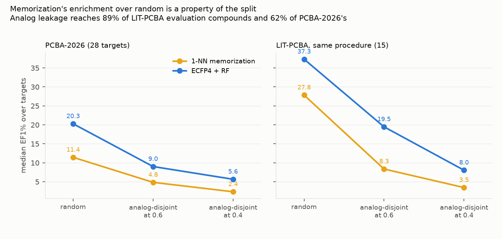
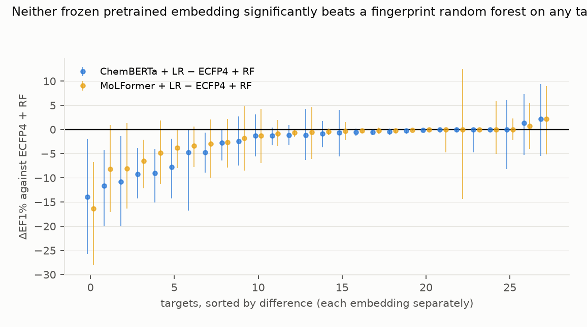
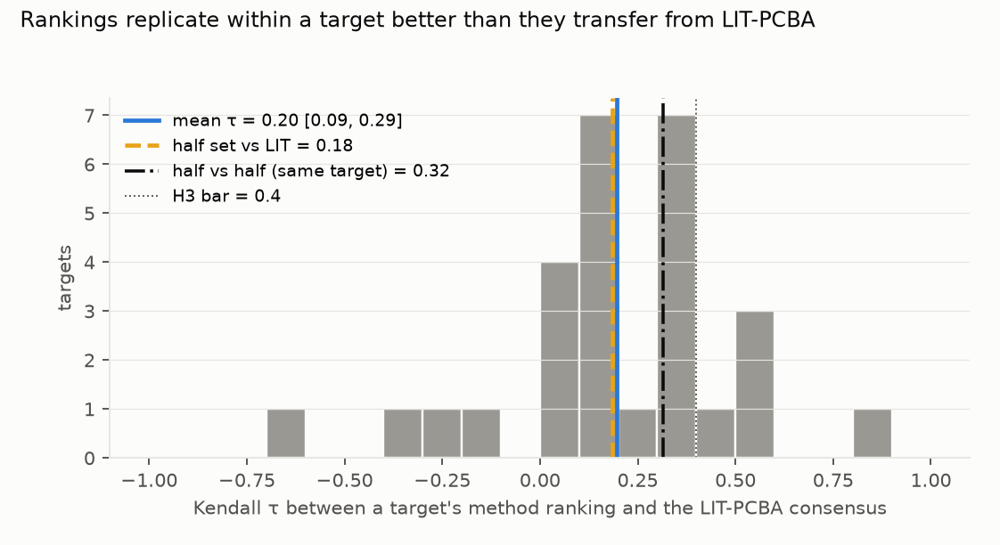

Verdict: H1 Inconclusive; H2 Supported; H3 Supported.
- The leakage LIT-PCBA was criticised for is real, and larger than in the new benchmark.
- Before the audit, a training neighbour above Tanimoto 0.4 exists for 89% of LIT-PCBA evaluation compounds and 62% of PCBA-2026's (medians over targets).
- Removing them leaves 12% of LIT's compounds scorable (12% pooled), against 40% of PCBA-2026's by target median but only 20% pooled over all rows.
- The audit keeps actives at a higher rate than other compounds (46% against 40%, PCBA-2026 medians), so the median hit rate rises from 2.4% to 3.2% and the median EF1% ceiling falls from 41 to 32 (post hoc).
- H1 (memorization's enrichment over a random scorer at least halves on the leakage-controlled benchmark):
Inconclusive.
- Q = A_new / A_lit = 0.43, which meets the preregistered bar as a point estimate, but the interval is useless (−1.47 to 3.38): it is a ratio of two medians, one over only 15 LIT targets.
- The within-benchmark contrast is the clean evidence, and it is unambiguous. Holding the data fixed and changing only the split, the memorization baseline's median EF1% falls from 11.4 (random) to 4.8 (analog- disjoint at 0.6) to 2.4 (at 0.4) on PCBA-2026, and from 27.8 to 8.3 to 3.5 on LIT-PCBA.
- So the memorization result is a property of how the benchmark is split, not of the chemistry, and LIT-PCBA's larger collapse matches its larger analog redundancy.
- The memorization baseline never beats ECFP4 + random forest here, in any of the seven benchmark × split arms; its median EF1% is 2.4 to 11.1 units lower (post hoc, prompted by the review). The audit this study responds to reports that such a baseline matches published state of the art. In this study's hands it does not match even a plain fingerprint random forest, on either benchmark, under any split.
- The restricted subset agrees. On the 19 targets at or below a 5% hit rate (D2), Q = 0.84 (−3.60 to 8.02), still Inconclusive.
- H2 (pretrained molecular embeddings, used frozen and mean-pooled with a linear head, do not beat ECFP4 + random
forest): Supported.
- On 0 of 56 target-embedding pairs does an embedding's paired bootstrap interval exclude zero in its favour. The random forest's does on 9, so 47 pairs are inconclusive both ways; the median differences carry the direction.
- Median ΔEF1% is −1.00 for ChemBERTa and −0.56 for MoLFormer-XL.
- On the primary split the medians are RF 5.65, LightGBM 5.32, ChemBERTa 4.36, MoLFormer 4.29, memorization 2.36.
- H3 (method rankings do not transfer from LIT-PCBA): Supported, and the evidence points to a real difference
between benchmarks.
- Mean Kendall τ between a PCBA-2026 target's ranking and the LIT consensus is 0.20 (0.085–0.295), under the 0.4 bar.
- Rankings replicate within a target better than they transfer between benchmarks (corrected after review).
- Halving a target's data barely changes its agreement with the LIT consensus (τ 0.185, against 0.196 with the full set), so that figure is not noise-limited.
- Two halves of the same target agree with each other at 0.315.
- The first draft compared the full-set statistic with a half-against-half ceiling (0.29 from one random halving) and called the disagreement noise. That comparison was not like for like.
- The evidence is not conclusive. Per target, the paired gap between half-against-half and half-against-LIT is 0.139, but its 95% interval over targets (−0.023 to 0.303) crosses zero, and 17 of 27 targets show a positive gap.
- The LIT consensus is itself near-tied. A bootstrap over the 15 LIT targets reproduces its order only 11%
of the time (confirmation pass,
review/review.md).
- The restricted subset agrees: mean τ 0.139 (−0.004 to 0.283) on the 19 low-hit-rate targets.
In plain terms
To judge a program that picks promising drug molecules, you hide some known answers and see how many it recovers. The catch is which molecules you hide. Chemists make families of near-identical molecules, so if a close relative of a hidden molecule stays in the training set, a program can win by looking up the relative rather than understanding anything.
A 2025 audit showed the field's standard benchmark, LIT-PCBA, is full of such relatives. We measured it: for about nine in ten of its test molecules, a near-twin sits in the training data. We then built a fresh benchmark from recent public screening experiments and removed the near-twins from scoring.
Doing that, the pure look-up method's score collapses — from 28 to 3.5 on the old benchmark, and from 11 to 2.4 on ours. In other words, much of what the benchmark was measuring was look-up.
Three further results. On the median across targets, the look-up method never beat a plain 1990s-style molecular fingerprint with a random forest, on either benchmark (it wins on 7 of 144 individual target-and-split cases). Large pretrained "foundation" models for chemistry, used as fixed feature extractors, did not significantly beat that random forest on any target either. And the ranking of methods on the old benchmark does not carry over to the new one: two halves of one target's data agree with each other better than either agrees with the old benchmark.
What was asked
The lead asked for a leakage-audited, post-cutoff replacement for LIT-PCBA, and for the measurement of whether method rankings move when you switch to it.
Prior work: - The LIT-PCBA leakage audit (arXiv 2507.21404) documents duplicated and analog ligands across its splits and shows a parameter-free memorization baseline matching reported state of the art. It released code but no corrected benchmark, and none of its citing works has released one. - LIT-PCBA itself (Tran-Nguyen, Jacquemard & Rognan, JCIM 2020), including its AVE-debiased split, which is the "as published" arm here. - MF-PCBA (JCIM 2023) is the closest construction recipe. It predates these assay depositions and does not enforce analog-disjoint splits.
How it was done
- Assays. PubChem confirmatory assays deposited from 2021-01-01, one protein target, at least 50 active and 5,050 tested substances: 51 assays, one per gene by most actives, giving 32 candidate targets and 28 after the compound funnel. Depositors are NCATS and Tox21.
- Compounds. Outcomes as PubChem gives them; deduplicated by InChIKey connectivity block, with conflicting
groups dropped; RDKit-parsed. 1,769,491 substance records in, 1,574,697 kept
(
results/tables/coverage.json). - Analog-disjoint folds. Per target, ECFP4 Butina clusters at distance 0.6 assigned to 5 folds balancing actives, then any evaluation compound with a training neighbour above Tanimoto 0.4 removed from scoring. The realised nearest-neighbour similarity is audited per target (0.6 and a random split are the sensitivities).
- Size cap (D3). At most 50,000 compounds per target, subsampling both classes proportionally so the hit rate, and therefore EF1%'s ceiling of min(100, 1/hit-rate), is preserved. Checked against the uncapped set on the three largest targets.
- Methods, fixed hyperparameters, no tuning: 1-NN maximum Tanimoto to training actives; ECFP4 + random forest (500 trees, balanced); RDKit descriptors + LightGBM; ChemBERTa-77M-MLM and MoLFormer-XL-both-10pct mean-pooled embeddings with logistic regression. The two pretrained models ran offline in Docker, without credentials.
- Metrics. EF1% primary; BEDROC (α = 20) and AUPRC secondary; bootstraps over targets, and paired over evaluation compounds for H2.
Results
Splits, not chemistry (results/figures/F1_splits.png)


| benchmark | split | memorization | ECFP4 + RF | LightGBM | ChemBERTa | MoLFormer |
|---|---|---|---|---|---|---|
| PCBA-2026 | random | 11.43 | 20.27 | 15.88 | 7.45 | 8.84 |
| PCBA-2026 | analog-disjoint 0.6 | 4.83 | 9.00 | 8.17 | 5.07 | 5.49 |
| PCBA-2026 | analog-disjoint 0.4 | 2.36 | 5.65 | 5.32 | 4.36 | 4.29 |
| LIT-PCBA | random | 27.83 | 37.29 | 11.33 | 11.59 | 15.58 |
| LIT-PCBA | analog-disjoint 0.4 | 3.46 | 8.04 | 6.35 | 4.57 | 3.02 |
| LIT-PCBA | as published (AVE) | 4.15 | 6.50 | 5.15 | 6.34 | 5.20 |
Median EF1% across targets. The published LIT-PCBA split already suppresses memorization (4.15) relative to a random split of the same data (27.83), which is what its AVE debiasing was for; the analog-disjoint procedure suppresses it further (3.46).
Embeddings against a fingerprint random forest (results/figures/F2_embeddings.png)


Ranking agreement and its ceiling (results/figures/F3_ranking.png)


What this does and does not show
- A benchmark's memorization result is mostly a statement about its split. The same compounds and labels give a memorization EF1% of 11.4 or 2.4 depending only on whether near-twins are allowed into scoring.
- PCBA-2026 is less analog-redundant than LIT-PCBA (62% against 89% of evaluation compounds with a close training neighbour), but it is not clean: the audit still removes 60% of its compounds from scoring (target median; 80% pooled over all rows).
- Pretrained chemical embeddings bought nothing here over a fingerprint random forest, on a benchmark whose labels postdate 2021 and, for 12 targets, 2023.
- Rankings from one benchmark should not be carried to another. Two halves of a target agree at τ 0.315, while a half set agrees with LIT-PCBA's consensus at 0.185. Even within a target, five closely matched methods are ranked only loosely, and the gap's interval crosses zero.
- Not shown:
- That PCBA-2026 is contamination-free. The assay labels are recent, but the structures are mostly from the NCATS and Tox21 libraries and may appear in pretraining corpora.
- A representative sample of drug discovery. Two depositors and their compound libraries dominate; 7 of 28 targets are counterscreens with hit rates above 20%, where EF1% is capped near 2 to 5 (D2).
- Tuned or fine-tuned models, or docking. Hyperparameters were fixed in advance, the embeddings were frozen (no fine-tuning, no other pooling or head), and no structure-based method was run.
- That analog-disjoint splitting is the right difficulty. It can over-debias; the 0.6 and random splits show how much the answer moves.
Process and deviations
- Preregistration:
plan.md, committed before any activity outcome was downloaded. - Deviations (
deviations.md):- D1 (before any outcome): the published LIT split lives in the AVE archive, not the full-data one; PUG REST has no inconclusive outcome type; the MoLFormer snapshot needs transformers 5.
- D2 (before any fit): hit rates range from 0.18% to 49%, so EF1% ceilings range from 100 to 2; the preregistered all-28 analysis is reported beside a post hoc 19-target subset at or below a 5% hit rate. The EF1% ceiling formula was corrected to min(100, 1/hit-rate), and a wrong BEDROC implementation was fixed, both before any score.
- D3 (before any fit): the 50,000-compound cap and its check.
- D4 (after review), all post hoc:
- the comparable noise ceiling;
- memorization against the random forest;
- pooled audit shares and the hit-rate shift;
- the restricted subset's numbers;
- the H2 scope;
- a fix so the subset's τ no longer overwrites
tau_h3.csv.
- Gates: G1 (plan §5), G2 (
results/tables/coverage.json), G3 (results/plausibility.md), G4 (the leakage audit), G5 and G6 at write-up. G7 does not apply. - Independent review: publish with edits (five findings plus checks), edits in D4; confirmation pass: publish with edits, made in D5.
Reproducing it
code/fetch.py assays,outcomes,smiles,lit.code/build.py new, thencode/build.py lit.code/subsample.py build, thencheck.code/embed.pyfor both checkpoints, in thepcba-embed:3image (see its docstring).code/folds.py new, thencode/folds.py lit.code/run.py new,lit_cv,lit_pub.code/analyse.pyandcode/figures.py.